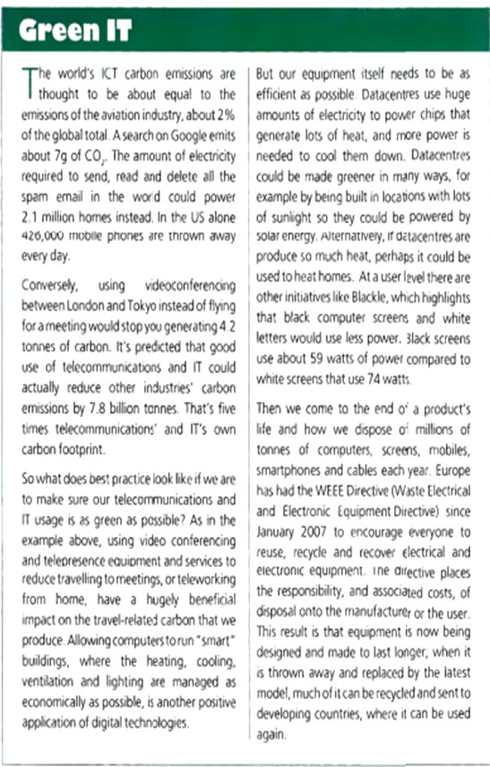

Unit 8
Read the text and select the correct opcion

1. In what ways is the telecoms and IT industry bad for the environment?
A) Carbon emissions of electricity.
B) Could be powered by solar energy.
C) Encourage everyone to reuse, recycle and recover electrical and electronic equipment.
2. In what ways could the telecoms and IT industry be good for the environment?
A) Looking new locations to energize servers, look for new recycle of gadgets and devices.
B) Carbon emissions of electricity.
C) Could be powered by solar energy.
3. How could user equipment be made greener?
A) Looking new locations to energize servers, look for new recycle of gadgets and devices.
B) Could be powered by solar energy.
C) Encourage everyone to reuse, recycle and recover electrical and electronic equipment.
4. In what two ways has the WEE directive had positive results?
A) Encourage everyone to reuse, recycle and recover electrical and electronic equipment.
B) Looking new locations to energize servers, look for new recycle of gadgets and devices.
C) Could be powered by solar energy.
Corregir
Cantidad acertada: